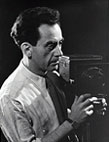

MAN RAY

Man Ray, pittore e fotografo, è considerato il massimo esponente della cultura dadaista americana.
Emmanuel Radnitsky nasce a Philadephia il 27 agosto 1890. Pochi anni dopo la famiglia si sposta a New York, dove il futuro artista studia alla Academy of Fine Arts e alla Ferrer School. La passione adolescenziale è la pittura e i primi lavori sono nel settore della tipografia e del design grafico.
Nel 1910 inizia a frequentare la galleria newyorkese "291", gestita dal fotografo Alfred Stieglitz. La frequentazione di questo importante centro artistico e gli incontri con il celebre fotografo contribuiscono a far crescere in Man Ray l'interesse per la fotografia.
Nel 1921 si trasferisce a Parigi, dove acquisisce fama internazionale per essere diventato il fotografo degli artisti più affermati. Tra le sue opere compaiono ritratti di Breton, Matisse, Hemingway, Brancusi, Joyce, Ernst, Stein. il periodo parigino tra le due guerre è il suo momento più felice, almeno in campo fotografico.
Si dedica interamente alla sperimentazione nel campo delle arti visive e inventa un nuovo procedimento fotografico: i rayographes. Si tratta di una nuova tecnica, dove la carta sensibile viene impressa appoggiando direttamente oggetti sull'emulsione. Sono fotografie "scattate" senza l'uso della macchina fotografica. In questi anni aderisce con convinzione al movimento artistico dadaista divenendo in seguito il maggiore esponente americano.
Gli anni Trenta lo vedono anche impegnato nella sperimentazione delle nuove tecniche surrealiste. Celebre è l'opera "Pesci" del 1938, conservata alla "Tate Gallery" di londra.
Con l'avvento del nazismo fugge dalla Francia a Hollywood, dove praticamente abbandona l'attività di fotografo. Morirà a Parigi il 18 novembre 1976.
Anche Man Ray, come molti artisti che hanno contribuito allo sviluppo e alla diffusione dell'arte surrealista e dadaista non si è focalizzato su un'unica forma d'arte. Le sue passioni sono sempre state la pittura e la fotografia, due forme d'arte che, a suo avviso, si completavano. Amava infatti sostenere che lui dipingeva ciò che non era fotografabile e fotografava ciò che non voleva dipingere.
La sua fotografia più famosa e "Le Violon d?Ingres", del 1924. E' una celebre immagine in cui il fotografo cerca di abbinare le forme dello strumento musicale alle dolci curve della schiena di una donna.